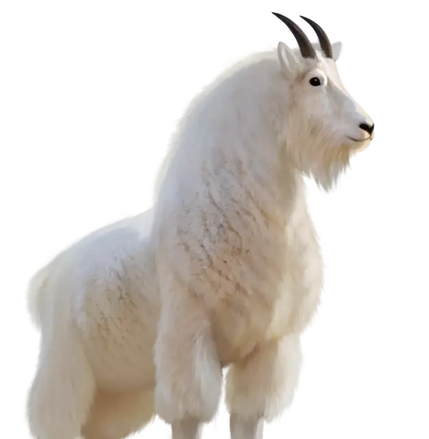

Козёл
Goat
Средний Зверь, без мировоззрения

Класс Защиты 10 Инициатива +0 (10)
Хиты 4 (1к8)
Скорость 40 футов, Лазания 30 футов
| мод | спас | ||
|---|---|---|---|
| СИЛ | 11 | +0 | +2 |
| ЛОВ | 10 | +0 | +0 |
| ТЕЛ | 11 | +0 | +0 |
| мод | спас | ||
|---|---|---|---|
| ИНТ | 2 | −4 | −4 |
| МДР | 10 | +0 | +0 |
| ХАР | 5 | −3 | −3 |
Чувства Тёмное зрение 60 футов, пассивное Восприятие 12
Языки нет
Опасность 0 (10 опыта; БВ +2)
Действия
Таран. Бросок рукопашной атаки: +2, досягаемость 5 фт. Попадание: 1 Дробящего урона, или 2 (1к4) Дробящего урона, если козёл переместился к цели по прямой хотя бы на 20 футов сразу перед попаданием.
Бонус мастерства +2